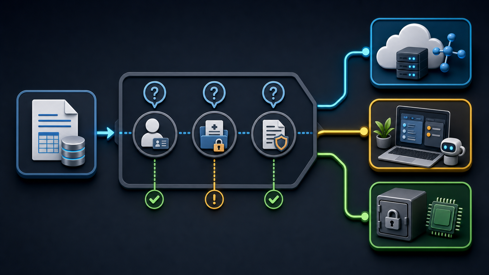

Module 2 不是介紹名詞，而是讓學員親眼看見三種 AI 的工作差異。Module 2 is not vocabulary review; it lets learners see how three AI modes work differently.
同一個任務交給聊天機器人、AI Agent 與 Local LLM，會產生不同的操作方式、成品能力與資料去向。The same task behaves differently in a chatbot, an AI agent, and a local LLM: different operation, output capability, and data path.
同一個小任務，最能看出「回話」和「動手做」的差別。One small task makes the gap between replying and acting visible.
給聊天機器人Give it to a chatbot
它通常會回 CSV 內容或程式碼，但不會真的在你的資料夾建立檔案。It usually returns CSV content or code, but it does not create a file in your folder.
給 AI AgentGive it to an AI agent
它可以在本機工作區建立 hello.csv，完成後回報結果。It can create hello.csv in the local workspace and report the result.
請把下面這份清單整理成 hello.csv，存到我目前的資料夾：
姓名, 系所, 想用 AI 做的事
王小明, 應用英語系, 整理課堂逐字稿
李美華, 機械工程系, 把實驗數據畫成圖
陳大文, 資訊管理系, 自動產生小考題目Please organize the following list into hello.csv and save it in my current folder:
Name, Department, What I want to use AI for
Wang Xiaoming, Applied English, Organize class transcripts
Li Meihua, Mechanical Engineering, Chart experiment data
Chen Dawen, Information Management, Auto-generate quiz questions
AI Agent 的威力，出現在多步驟、跨工具、需要驗收的任務。AI agent value appears in multi-step, cross-tool tasks that need verification.
先造資料Create data first
建立 scores.xlsx，含兩班 12 筆假資料。Create scores.xlsx with 12 sample records across two classes.
再請它分析Then analyze
計算總分、平均、班級各科平均，輸出新 Excel。Compute totals, averages, class subject averages, and a new Excel file.
最後做預覽Preview the result
產生圖表與 index.html，用 local server 開啟。Generate a chart and index.html, then open it with a local server.
The Power of AI Agents
目標：用一個多步驟、串接工具的任務，體會 AI Agent 自行拆解步驟、執行、遇錯自我修正的能力，並看見它的邊界。
動手做
步驟 A — 先請 Agent 幫你造一份練習用 Excel
這樣不需要外部檔案，自學也能重做。在 codex 貼上：
請幫我建立一個 Excel 檔 scores.xlsx，放在目前資料夾。
內容是一張成績表，欄位為：班級、姓名、國文、英文、數學。
請填入 12 筆假資料，班級分成 A 班與 B 班各 6 人，分數介於 50 到 100 之間。
步驟 B — 多步驟分析與產出
Workflow
這個練習要觀察 Agent 如何拆解、執行、遇錯再修正。This exercise shows how an agent decomposes, runs, and recovers from errors.
接著貼上：
請讀取 scores.xlsx，幫我做以下事情：
1. 計算每位學生三科的總分與平均，新增為兩個欄位。
2. 分別算出 A 班與 B 班的各科平均。
3. 把結果存成一個新的 Excel 檔 scores-summary.xlsx。
4. 再做一張長條圖，比較 A 班與 B 班的三科平均，存成 chart.png。
5. 最後產生一個 index.html，把這張圖和班級平均表放進去，
並用 local web server 開起來讓我預覽。
資料能不能上雲，先問三題，再選工具。Before sending data to the cloud, ask three questions and then choose the tool.
外流會傷害到誰？Who could be harmed by exposure?
若牽涉具名學生、受試者或個人，就偏向留在本機。If named students, participants, or individuals are involved, prefer local handling.
有可識別欄位嗎？Are there identifying fields?
姓名、學號、成績、健康或輔導紀錄都需要提高敏感度。Names, IDs, grades, health, or counseling records raise sensitivity.
有規範或承諾嗎？Are there rules or commitments?
IRB、考試保密、個資法或校內規範都會影響去向。IRB, exam secrecy, privacy law, or campus policy affects where data can go.

遇到一份資料時，先問自己這三題，再決定它適合上雲還是必須留在本機：
這份資料外流會傷害到誰？ 會傷害到具名的個人 (學生、受試者)，傾向留在本機。
它含有可識別身分的欄位嗎？ 姓名、學號、身分證、聯絡方式、成績、健康/輔導紀錄，傾向留在本機。
有沒有規範或承諾限制它的去向？ 研究倫理 (IRB)、考試保密、個資法，傾向留在本機。
資料類型
範例
建議去向
可公開
課程大綱、公開講義、開放資料
可上雲 (聊天機器人/Agent)
內部但低敏感
去識別化的統計、匿名問卷彙整
視情況，謹慎上雲
高敏感
學生個資、未公開考題、研究原始資料
留在本機 (Local LLM)
想一想
在你自己的學科裡，舉一個「必須留在本機」的具體資料，並說明原因。
自我檢核表
Success Criteria
離開 Module 2 前，學員要能用自己的任務重做一次。Before leaving Module 2, learners should be able to repeat the pattern with their own task.
✓
說出聊天機器人、AI Agent、Local LLM 的代表工具與差異。Explain representative tools and differences among chatbot, AI agent, and local LLM.
✓
用同一個 use case 說明 what to do、can do、safety。Use one case to explain what to do, can do, and safety.
✓
完成一個 AI Agent 多步驟任務，並驗收產物。Complete and verify one multi-step AI agent task.
✓
判斷至少一個必須留在本機的敏感情境。Identify at least one sensitive case that must stay local.
離開本模組前，逐項打勾確認：
☐ 我能說出三種情境 (聊天機器人、AI Agent、Local LLM) 的代表工具與差異。
☐ 我用同一個簡單 use case，講得出 what to do、can do、safety 三個角度的差別。
☐ 我操作 AI Agent 完成了一個多步驟任務 (讀檔、計算/整理、產出成品)。
☐ 我用 AI Agent 從 data.gov.tw 抓了一份開放資料，存成本地 clean.csv。
☐ (進階) 我用 Ollama + Gemma 在離線狀態下完成了一項 Local LLM 任務。
☐ 我能舉出至少一個需要本地處理的敏感情境，並說明原因。
課後速查 — 可重複使用的 Prompt 範本
Use and Source Notes
帶回去的不是一組固定答案，而是一套可重複使用的判斷與操作流程。The take-home is not a fixed answer set; it is a reusable judgment and workflow pattern.
可重複使用的 promptReusable prompts
整理清單成檔案、多步驟分析與產出、抓開放資料、Local LLM 離線去識別化，都可換成自己的學科素材。List-to-file, multi-step analysis, open-data download, and offline de-identification prompts can all be adapted to each discipline.
使用與來源說明Use and source notes
本投影片供 AI Agent 工作坊 Module 2 課堂投影使用，重點整理自同專案的 Module 2 練習講義。實際服務畫面、模型名稱與資料平台狀態仍以使用當下為準。These slides are for AI Agent Workshop Module 2 classroom projection and are based on the Module 2 exercise workbook in this project. Service screens, model names, and data-platform status should follow the live context when used.
把 <> 裡的內容換成你自己的，即可套用到你的學科：
整理清單成檔案 (簡單 use case)
請把下面這份清單整理成 <檔名>.csv，存到我目前的資料夾：
<貼上你的清單>
多步驟分析與產出 (複雜 use case)
請讀取 <你的檔案>，幫我：
1. <要計算/整理什麼>
2. 把結果存成 <新檔名>
3. 畫一張 <圖型> 存成 chart.png
4. 產生 index.html 放入結果，並用 local web server 開起來預覽